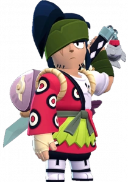

¿Quién es Kenji?
Este talentoso cocinero cambió la katana por los cuchillos de cocina y ahora regenta un tranquilo restaurante de sushi en Starr Park. Parece que oculta algo sobre su pasado, ¡pero su sushi es tan delicioso que a nadie le importa!
Kenji es un brawler Legendario que tiene una gran salud, un daño variable y una velocidad de movimiento muy rápida. Su rasgo le permite recuperar salud después de atacar a los enemigos. Su ataque alterna entre un dash y un slash. En el primer ataque, lanza algunas fichas hacia adelante mientras balancea su katana, causando poco daño a los enemigos en su camino. En el segundo ataque, no se lanza, sino que mueve su katana en un arco amplio y de corto alcance, causando un daño moderado. Para su Súper, Kenji lanza un pez sobre los obstáculos, cortando en un patrón cruzado donde aterriza el pez, lo que causa un gran daño por salpicadura a los enemigos.
|  |
NIVEL DE FUERZA 11 |
Sus gadgets
FILO FUTOMAKI: El ataque base de Kenji solo embiste durante los próximos 3 segundos. |
SALSA DE SOJA SANADORA: Kenji se cura al instante un 50% del daño recibido durante los últimos 3 segundos.. |
Sus habilidades estelares
 |
ESTOCADA DE ESTURIÓN: El alcance de los cortes de Sablazo de sashimi es un 30% mayor. |
 |
DEFENSA DASHI: Si no recibe daño durante 5 segundos, obtiene una reducción de daño del 90% en el siguiente ataque. |
 Braian Arancibia
Braian Arancibia Aya El Baarar
Aya El Baarar